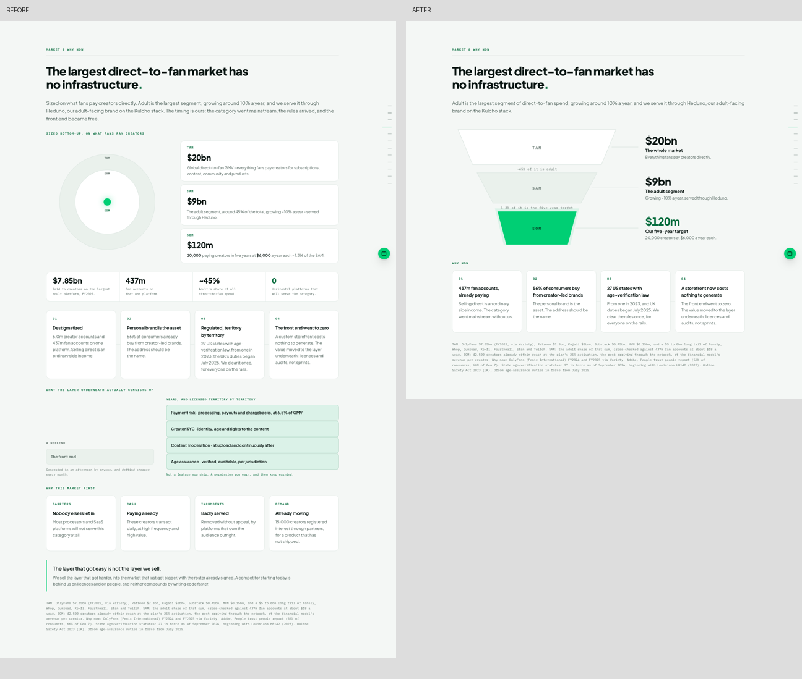
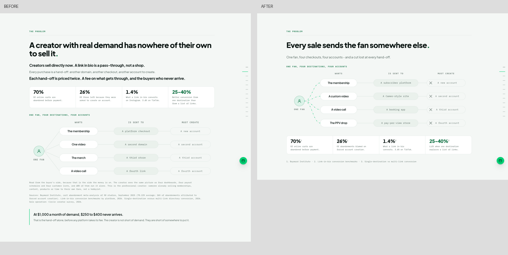
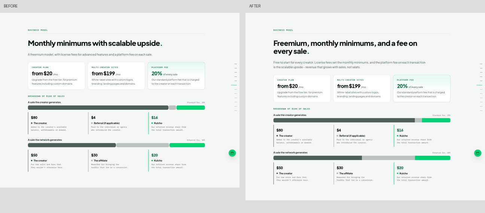
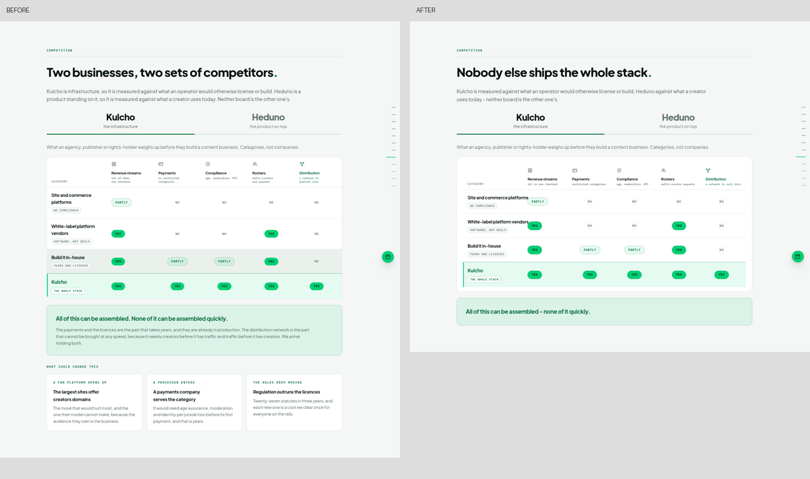
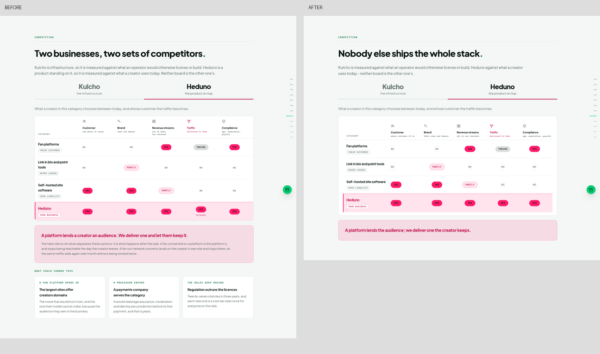

Kulcho invest deck · pass 3
Component visuals, before and after
Same deck, same design system. Left of each pair is what ships in pass 2 tonight; right is the pass-3 revision, folded in from the review notes.
1. Market & why now — funnel, section on a diet
Nested circles replaced by a funnel with the honest math at each junction. Everything below it cut back to one body line and four stat-led why-now items.

2. The problem — network fan-out, reordered
One-line title, single intro line, the drawn fan-out network moved above the four stat tiles, sources line underneath, closing block removed.

3. Business model — one continuous bar
Pass-2 proportions kept, but each $100 bar is now a single continuous track: square internal boundaries, rounded only on the outer ends, no numbers inside.

4. Competition — Kulcho board
The table stays, upgraded: framed as one board, marks centered, Kulcho row highlighted. New title, one-line body, one punch line under the table, what-could-change tiles removed.

5. Competition — Heduno board
Same treatment in Heduno pink.
